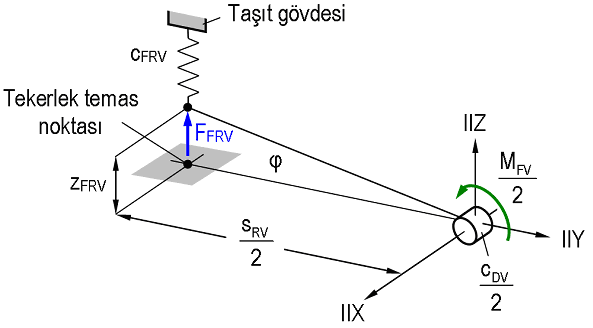

|
M. Murat Topaç, N. Sefa Kuralay
Dokuz Eylül Üniv. Müh. Fak., Makine Müh. Böl., Otomotiv A.B.D.
Bornova, Ýzmir
Not: Bu makale ilk olarak TMMOB Mühendis ve Makina Dergisi Temmuz 2009 sayýsýnda yayýnlanmýþtýr ve aþaðýdaki linkten PDF formatýnda indirilebilir;
www.mmo.org.tr/resimler/ekler/5dfa0f45e8707dd_ek.pdf (11,7MB)
Özet
Aðýr taþýtlarda, gövdenin yalpa eðilimini sýnýrlandýrmak amacýyla, süspansiyon sisteminde kullanýlmasý gereken stabilizatörün çapýný belirlemede uygulanabilecek pratik bir yöntem açýklanmýþtýr. Bunun için tasarým aþamasýndaki 17 ton kapasiteli bir yolcu otobüsünün bilinen teknik deðerleri ýþýðýnda önce, eþdeðer burulma yayý yaklaþýmý kullanýlarak basit yalpa analizi yapýlmýþtýr. Elde edilen yalpa açýsý deðerleri, taþýtýn tam ölçekteki basitleþtirilmiþ simülasyon modelinden bulunan sonuçlarla karþýlaþtýrýlmýþ, aks ve taþýt gövdelerini baðlayan çubuk elemanlarýn dinamiðinin yalpa eðilimine etkisi deðerlendirilmiþtir. Bu sonuçlar ýþýðýnda, gövde yalpasýný literatürde önerilen sýnýrlama dahilinde tutabilmek için taþýtýn ön aksýna yerleþtirilmesi gereken stabilizatörün burulma yay katsayýsý ve bu katsayýyý saðlayan çap deðeri belirlenmiþtir. Parçanýn tam ölçekte katý modeli oluþturulmuþ, taþýtýn kritik viraj dönüþü durumunda, stabilizatör bacaklarýnda oluþacak elastik þekil deðiþimi sonlu elemanlar analizi kullanýlarak simüle edilmiþtir. Stabilizatör bünyesinde oluþan en yüksek gerilme deðerleri ýþýðýnda parçanýn öngörülen fonksiyon açýsýndan uygunluðu deðerlendirilmiþtir.
Anahtar kelimeler: Taþýt gövdesi dinamiði, yalpa, stabilizatör, mekanik tasarým
Computer aided design of an anti-roll bar for a passenger bus
Abstract
A practical method to determine the diameter of the anti-roll bars used to limit the body's tendency to roll of heavy commercial vehicles is described. In order to do this, a roll analysis was performed by using equivalent roll stiffness approach in the light of the prior known technical data of a 17 tonnes capacity passenger bus. Roll angle values obtained were compared to the results achieved from a simplified full-scaled simulation model of the vehicle which was created to evaluate effects of the dynamics of arms mounting the axle and vehicle body on body roll tendency. In the light of these results, to be able to limit the body roll angle in the recommended limits given in literature, the torsion spring coefficient and diameter of the anti-roll bar which should be placed on the front axle were determined. A full-scaled solid model of the anti-roll bar was composed. The elastic deformation of the anti-roll bar legs during the critical cornering maneuver of the vehicle was simulated by using finite element analysis. In the light of the maximum stress obtained from the analysis, functional conveniency of the anti-roll bar was evaluated.
Keywords: Vehicle body dynamics, body roll, anti-roll bar, mechanical design
1. GÝRÝÞ
Bir taþýt gövdesi için uzayda altý temel serbestlik derecesi tanýmlanýr (Þekil 1). Bunlardan üçü öteleme, diðerleri ise dönme hareketlerine izin verir. Gövdenin, kütle merkezine sabit X, Y ve Z eksenleri çevresindeki sonlu dönme hareketleri sýrasýyla yalpa, baþ sallama ve savrulma olarak adlandýrýlýr [1,2].
Þekil 1. Taþýt gövdesinin uzaydaki serbestlikleri
Bir karayolu taþýtýnýn stabil bir sürüþ karakteristiðine sahip olabilmesi için anýlan bu üç hareket belirli sýnýrlar dahilinde tutulmalýdýr. Diðer taraftan, yolcu taþýtlarýnýn süspansiyon sistemlerinde kullanýlan yaylarýn, kontrolün yanýsýra konfor gereksinimini de karþýlamasý beklenir. Ancak konforun ön planda tutulduðu bir süspansiyon sistemi taþýtýn viraj hareketi sýrasýnda, öngörülen sýnýrlarýn daha üzerinde yalpa açýsý oluþmasýna neden olabilir. Böyle bir durumda gövdenin yaylara ilaveten, stabilizatör olarak adlandýrýlan dengeleme çubuklarý yardýmýyla desteklenmesi gerekir. Stabilizatör, yapýsý ve monte ediliþ biçimi gereði yalnýzca burulmaya çalýþmakta, taþýt þasisinin düþey titreþim frekansýna pratik bir etkide bulunmamaktadýr (Þekil 2).
Bu çalýþmada, sabit akslý taþýtlarda kullanýlan yaylarýn yay katsayýsýna göre kullanýlmasý gerekli stabilizatörün burulma yay katsayýsýnýn ve çapýnýn belirlenmesinde izlenebilecek pratik bir yol kýsaca açýklanmýþtýr. Bunun için tasarým aþamasýndaki 17 ton kapasiteli bir yolcu otobüsünün teknik verileri esas alýnmýþ, viraj hareketi sýrasýnda taþýt konstrüksiyonunda kullanýlan yaylarýn, gövdenin yalpa eðilimine karþý gelme yeteneði, eþdeðer burulma yayý yaklaþýmý kullanýlarak incelenmiþtir. Oluþturulan matematik modelden hareketle gövde yalpasýný, literatürde öngörülmüþ sýnýrlar içerisinde tutmak amacýyla taþýtýn ön aks konstrüksiyonuna eklenmesi düþünülen stabilizatörün eþdeðer burulma yay katsayýsý belirlenmiþtir. Viraj hareketi sýrasýnda ön ve arka aks yalpa merkezlerindeki dinamik konum deðiþiminin, matematik modelden elde edilen yalpa açýsý deðerlerine oranla hangi ölçüde farklýlýða neden olduðunu saptamak amacýyla, SolidWorks® ve COSMOSMotion® paket programlarý yardýmýyla taþýtýn tam ölçekli basitleþtitilmiþ bir simülasyon modeli oluþturulmuþtur. Viraj hareketi, deðiþik yanal ivme deðerleri için simüle edilmiþ, buradan elde edilen yalpa açýsý deðerleri, kurulan matematik modelden hesaplanan açýlarla karþýlaþtýrýlmýþtýr.
Þekil 2. Taþýt ön aksýnda stabilizatörün yerleþimi
Son bölümde, hesaplanan yay katsayýsýný saðlayacak stabilizatör çapý belirlenmiþtir. Taþýtýn savrulma sýnýrlarýnda gerçekleþtirilecek bir viraj dönüþü sýrasýnda, stabilizatör bacaklarýnda oluþacak elastik þekil deðiþimi dikkate alýnarak, söz konusu çapýn mukavemet açýsýndan yeterliliði ANSYS® Workbench V11.0 sonlu elemanlar paketi kullanýlarak analiz edilmiþtir. Bu þekilde, kritik viraj dönüþü durumunda parça bünyesinde oluþacak gerilme deðerleri hesaplanmýþ, parçanýn fonksiyona uygunluðu deðerlendirilmiþtir.
2. Taþýtýn yalpa davranýþýnýn incelemesi
2.1. Taþýt Gövdesinin Yalpa Hareketi
Belirli bir aq yanal ivmesiyle gerçekleþtirilen viraj hareketi sýrasýnda taþýt gövdesinin, FC santrüj kuvveti nedeniyle düþey eksenden yalpa açýsý kadar saparak viraj dýþýna doðru yatmasý "yalpa hareketi" olarak adlandýrýlýr (Þekil 3). Bu sýrada gövdeye etkiyen devirme kuvveti, aks ile gövde arasýna monte edilmiþ yay elemanlarýnýn oluþturduðu toplam direnç momenti tarafýndan karþýlanýr. Konfor ve kontrol nedenleriyle yalpanýn belirli sýnýrlar dahilinde tutulmasý gerekir. Zira aþýrý derecedeki bir yalpa hareketi, özellikle kütle merkezi yüksekte bulunan aðýr taþýtlarda viraj emniyetini olumsuz etkilemektedir. Modern binek taþýtlarýnda aq=1(m/s^2)'lik yanal ivme için gövdenin ortalama  0,6(°) yalpa yapmasý normal kabul edilmektedir [3]. 0,6(°) yalpa yapmasý normal kabul edilmektedir [3].
Tablo 1. Model taþýtýn bazý teknik deðerleri
Büyüklük |
Kýsaltma |
Deðer |
Birim |
Taþýtýn toplam yaylandýrýlmýþ kütlesi |
m2F |
14788 |
kg |
Aks mesafesi |
LF |
6050 |
mm |
Kütle merkezinin ön aksa uzaklýðý |
LV |
3957 |
mm |
Kütle merkezinin yerden yüksekliði |
hSP |
1196 |
mm |
Ön aks iz geniþliði |
sRV |
2096 |
mm |
Arka aks iz geniþliði |
sRH |
1825 |
mm |
Þekil 3. Taþýt gövdesinin yalpa hareketi
Ýncelenen taþýtta gövdenin yaylandýrýlmasý, dört noktadan askýlý sabit akslar üzerine monte edilmiþ hava yaylarý yardýmýyla gerçekleþtirilmektedir. Gövde ön aksta iki, arka aksta toplam dört adet yay tarafýndan taþýnmaktadýr. Arka aks konstrüksiyonunda kullanýlan hava yaylarýnýn temel boyutlarý ve yay karakteristiði örnek olarak Þekil 4'te verilmiþtir. Taþýt gövdesinin düþey dinamiði ve yalpa eðilimi, bu diyagramda görülen, adyabatik progresif eðri takýmý üzerinden deðerlendirilmektedir. Yüklemenin bir fonksiyonu olan hava yayý katsayýsý, yay üzerine etkiyen yükün diyagramýn ordinatýna taþýnmasý ile bulunan noktadan geçen adyabatik eðriye çizilen teðetin eðimidir [1,3,5]. Hava yayý karakteristikleri genellikle efektif basýnç, pe cinsinden ifade edildiðinden, yay katsayýsý hesaplamasýnda açýk hava basýncý pa'nýn etkisi de dikkate alýnýr. Yay katsayýlarý bu yaklaþýma göre taþýtýn tekerlek temas noktalarýna etkiyen düþey yükler üzerinden, Þekil 5'e uygun olarak hesaplanmýþtýr. Dolayýsýyla bulunan deðerler yaylarýn montaj noktasýndaki gerçek katsayýlarý (cF) deðil, tekerleðin yere oturduðu noktanýn normali doðrultusunda yerleþtirildiði varsayýlan model yaylarýn katsayýsýdýr (cFR). Ön ve arka aksa isabet eden yaylandýrýlmýþ kütleler ve yay karakteristikleri üzerinden ön aks için, cFRV=125,3(kN/m) ve arka aks için, cFRV=109,24(kN/m) olarak hesaplanmýþtýr.
Þekil 4. Arka aks yayýnýn temel boyutlarý ve karakteristikleri
2.2. Eþdeðer burulma yayý modeli
Taþýtýn yalpa hareketi matematiksel olarak modellenirken kullanýlan yaklaþýmlardan bir tanesi, gövdenin "yalpa ekseni" olarak adlandýrýlan bir eksen etrafýnda döndüðü varsayýmýdýr. Yalpa ekseni, ön ve arka aks yalpa merkezlerini (MPV ve MPH) birleþtirdiði düþünülen teorik bir doðrudur [6,7]. Yolcu otobüsünün, bu düþünceden yola çýkýlarak oluþturulmuþ matematiksel yalpa modeli Þekil 6'da görülmektedir. "Eþdeðer burulma yaylý yalpa modeli" olarak da bilinen bu sistemde yalpa ekseninin, yalpa merkezlerinde bulunan, katsayýlarý cDV ve cDH olan K ve L burulma yaylarýna, X' ekseni etrafýnda dönebilecek þekilde yataklandýðý varsayýlmaktadýr. K ve L, tekerlek temas noktasý için katsayýlarý hesaplanmýþ teorik yaylar yerine yalpa merkezlerine yerleþtirildiði düþünülen ve bunlara eþdeðer burulma rijitliði oluþturabilen model yaylardýr.
Þekil 5. Karakteristik eðri olmaksýzýn belirli bir yükleme deðerindeki
yay katsayýsýnýn bulunmasý [1]
Þekil 6. Eþdeðer burulma yaylý yalpa modeli
Viraj hareketi sýrasýnda taþýt gövdesine etkiyen yanal atalet kuvveti, burulma yaylarý tarafýndan karþýlanmakta, dolayýsýyla Þekil 6'da görülen durumda model üzerine etkiyen kuvvetler dengede bulunmaktadýr [3]. Model burulma yaylarýnýn katsayýlarý cD, tekerlek temas noktasý için bulunan cFR katsayýlarý ve Þekil 7 yardýmýyla hesaplanmýþtýr.

Þekil 7. Ön aksta eþdeðer burulma yayý katsayýsýnýn hesaplanmasý
Burada cFRV katsayýsýna sahip bir yayda zRV þekil deðiþimi oluþturacak FFRV kuvveti, 10°'den küçük açý deðerleri için sin=tan (rad) ve cos1 kabul edilerek;
 (1) (1)
ve burulma yayýnýn ön aksta taþýdýðý toplam moment MFV, X ekseni çevresinde moment dengesinden her iki tekerlek için;
(2)
þeklinde yazýlabilir. Bunun yanýnda;
(3)
olduðundan eþdeðer burulma yayý katsayýsý, tekerlek temas noktasýna indirgenmiþ yay katsayýlarý üzerinden, ön ve arka aks için genelleþtirilmiþ þekilde;
(4)
olarak ifade edilir. Tablo 1'deki veriler yardýmýyla ön ve arka aks için bulunan eþdeðer burulma katsayýlarý Tablo 2'de verilmiþtir. Yanal kuvvet nedeniyle oluþacak devirici momentin belirlenmesinde kullanýlan moment kolu, kütle merkezi SP ile bunun bulunduðu YZ düzleminin yalpa ekseniyle kesiþim noktasý M arasýnda kalan hX uzaklýðýdýr. Bu deðer, yalpa ekseninin uzaydaki yerleþimine, dolayýsýyla yalpa merkezlerinin konumuna baðlýdýr.
Tablo 2. Matematik modelde kullanýlan bazý büyüklükler
Büyüklük |
Kýsaltma |
Deðer |
Birim |
Tekerlek temas noktasýna indirgenmiþ yay katsayýsý (ön aks) |
cFRV |
125,3 |
kN/m |
Tekerlek temas noktasýna indirgenmiþ toplam yay katsayýsý (arka aks) |
cFRH |
218,5 |
kN/m |
Eþdeðer burulma yay katsayýsý (ön aks) |
cDV |
275,2 |
kNm/rad |
Eþdeðer burulma yay katsayýsý (arka aks) |
cDH |
363,4 |
kNm/rad |
|